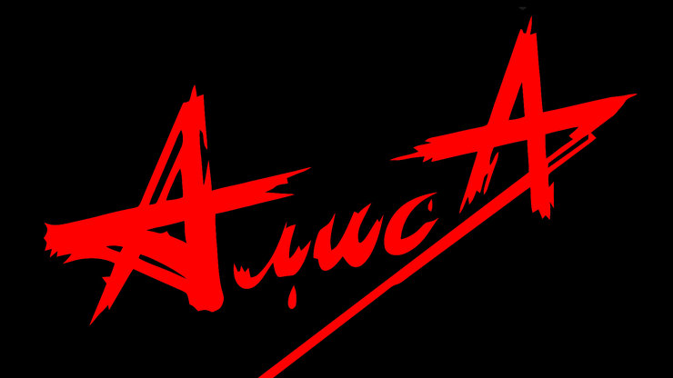
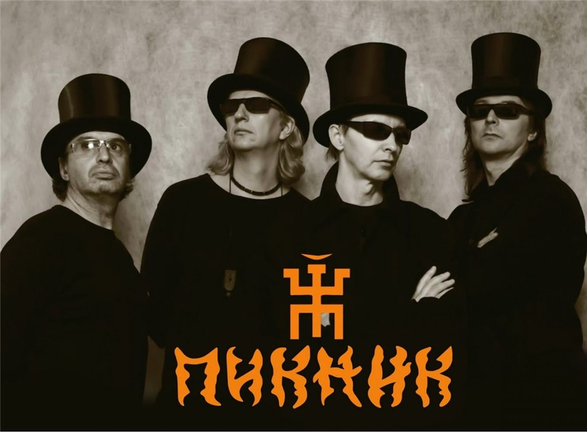
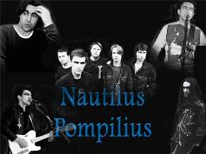

Алиса (группа)
«Алиса» — советская и российская рок-группа, образованная в 1983 году в Ленинграде.
ПикНик (группа)
«Пикни́к» — советская и российская рок-группа, основанная в Ленинграде в 1978 году.
Nautilus Pompilius (группа)
Nautilus Pompilius («Наути́лус Помпи́лиус») советская и российская рок-группа, одна из наиболее известных во второй половине 1980-х и в середине 1990-х годов.